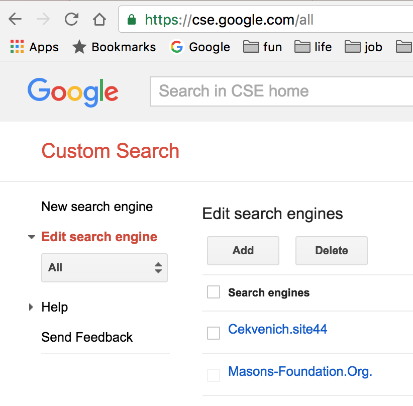
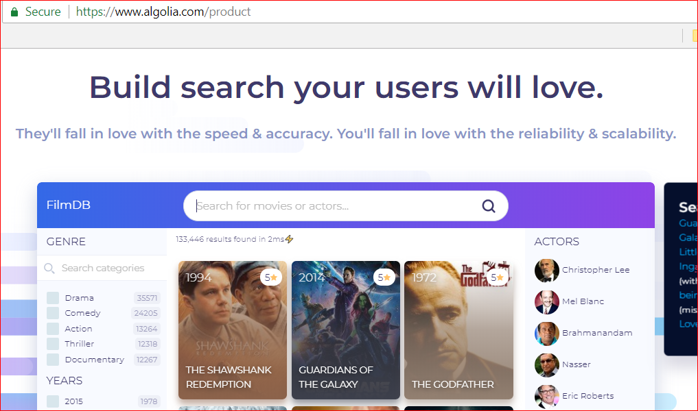

If you remember one thing:
.js is procedural. HTML DOM is declarative.
Instant SEO feedback service.
WebMaster tools

WebMaster tools
*Low-code*!!
Optional: 'Private Search' API

When using CDN for assets
And needed for samples apps - the only .js needed.